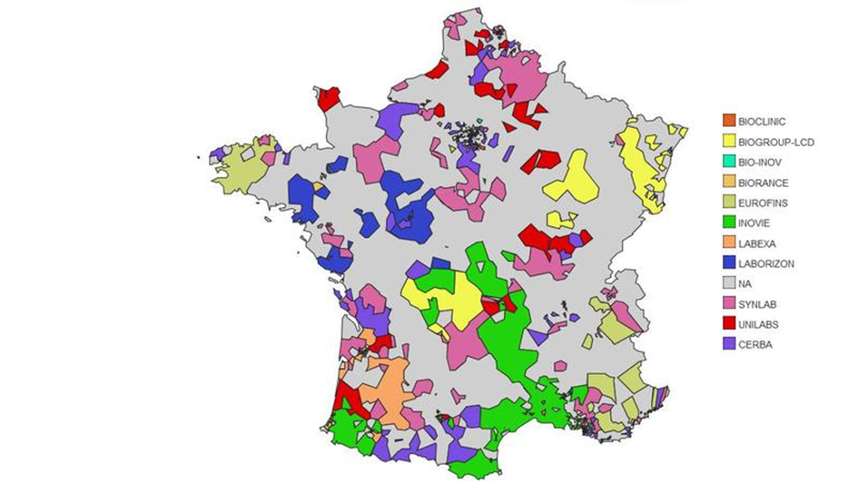

La société GastonMediLab, fait partie des leaders européens sur les prélèvements médicaux pour les particuliers. Fondé en 1987 avec l’ouverture de trois laboratoires diagnostiques en Suisse, le groupe GastonMediLab s’est rapidement développé en appliquant une stratégie d’acquisition de laboratoires partenaires de qualité sur l’ensemble du continent européen. En 2007, GastonMediLab fusionne avec la grande entreprise d’imagerie diagnostique Capio, présente en Suède, en Norvège, en Finlande, au Danemark et au Royaume-Uni. Grâce à cette fusion, GastonMediLab devient le leader incontesté des services diagnostiques en Europe. GastonMediLab exploite son expertise en médecine de laboratoire, en imagerie et en pathologie pour fournir des réponses aux questions diagnostiques dans toutes les disciplines médicales. Notre catalogue de services couvre tous les aspects du diagnostic, notamment dans les domaines suivants :
Il y a un engagement afin de fournir un résultat d’analyse sous :
Répartition des groupements
Le système d'information actuel se caractérise par la présence d'un unique hyperviseur, hébergeant une machine virtuelle sous Windows 2008 R2. Cette machine virtuelle assume plusieurs rôles essentiels, notamment Active Directory, DNS, DHCP, partage réseau, et elle héberge également une machine virtuelle Linux, nommée ULABv3. Cette dernière est chargée de prendre en charge l'application centrale, ainsi qu'un service d'hébergement web et une base de données.
Cependant, il est à noter que cette infrastructure présente des lacunes majeures. En effet, les laboratoires d'analyses communiquent actuellement via des échanges de fichiers par le biais de WeTransfer, une méthode qui s'est avérée inefficace et peu sécurisée. De plus, les systèmes en place sont grandement obsolètes, ce qui entraîne une succession de pannes fréquentes. Cette situation nuit à la réputation de l'organisation et génère des coûts élevés en matière de maintenance et de dédommagement.
Face à ces problèmes récurrents, l'organisation a pris la décision de réagir de manière proactive en entreprenant une restructuration complète de son architecture informatique. Cette démarche vise à repartir de zéro, en adoptant une approche innovante et adaptée aux besoins actuels et futurs de l'entreprise. L'objectif premier est de mettre en place une architecture solide, évolutive et sécurisée qui répondra efficacement aux demandes croissantes en matière d'analyse médicale tout en optimisant les coûts opérationnels.
Afin de relever ces nouveaux défis, GastonMediLab souhaite monter une équipe et fait appel à votre expertise pour répondre à ces nouveaux enjeux.
Les servives attendues :